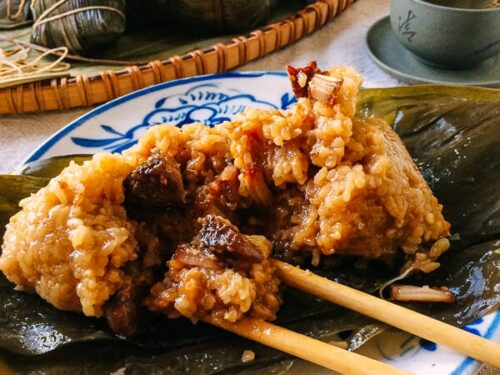
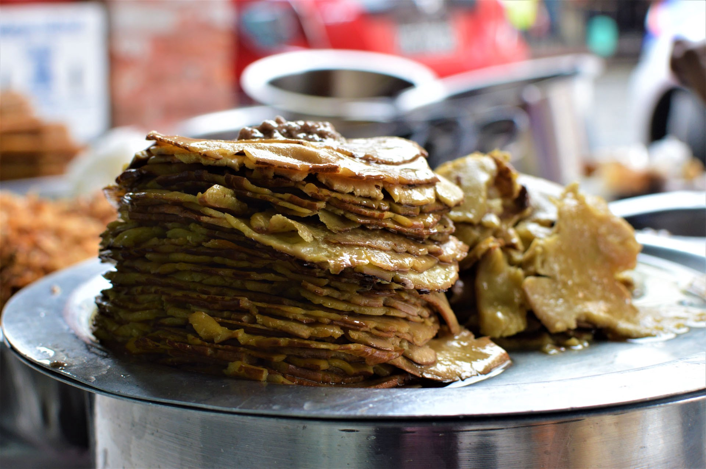
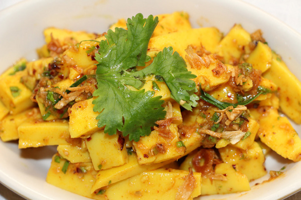
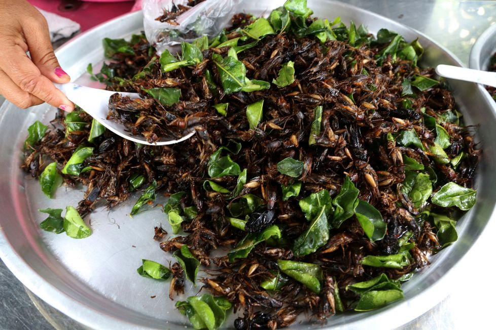

Ask anyone who’s visited Myanmar what one of their lasting memories is, and quite a few will tell you about the many street vendors that adorn the pavements. From Yangon to Mandalay and even in the smaller towns of Taungoo and Hsipaw, street vendors are a way of life in Myanmar, selling everything from food to mobile phones and much more besides.
Often spilling out onto the roads, street food vendors are extremely popular, serving some of the country’s favourite dishes. Hopefully we’ll have you drooling away after this article, showcasing some of the lesser known street foods in Myanmar that we think you just have to try.
1. Beef Offal Soup
The locals call it “A Mae Ou Sot Pyote” but you might know it better as beef offal soup. Beef offal, otherwise known as the organ meats of a cow, is often seen on wooden skewers and dipped in a steaming broth. For the soup however they are diced and added to some boiling water with chopped lemon leaves, some seasoning and then left to stew for a while.
Not to everyone’s liking due to the texture of the meat, the dish is slightly similar to Vietnamese pho (without the noodles). If you find a good stall, then this dish provides the perfect lunch break before continuing your travels. We recommend searching in Chinatown in Yangon around 19th street for the best in town.
2. Wat Thar Kout Nyin (sticky rice with pork wrapped in a banana leaf)
With a heavy influence from China, these little bundles are well worth trying. Simple, and yet so effective, peel off the banana leaf to reveal the perfectly steamed sticky rice. The texture is soft and it smells great because of the ginger and garlic that the dish is seasoned with. Bite down and you’ll find inside diced pieces of pork that complete this little snack.

We would recommend trying a vendor shop named “Phat Tee Ma” in Yangon Chinatown. “Phat Tee Ma” is an endearing way of saying “big fat lady” in Burmese. Here you’ll find they add extra big pieces of juicy pork which we think is a big win.
3. Da Nyin Thee Ohn No San (Burmese jengkol pancake)
Jengkol (or dogfruit) is a kind of seed that is native to Southeast Asia. They are sometimes used for medicinal purposes but in Myanmar, they are roasted, or boiled, to create some very yummy dishes.

This dish is a Burmese snack, sometimes referred to as a dessert, which can be found in Yangon. Watch how it is made, and it will definitely make you want to try.
Basically, the seed is boiled, and its shell is peeled off before being smashed with a hammer and flattened into a pancake like shape on a rock. Once thin enough, a coconut paste is added and then rolled into the pancake like shape and popped into your mouth. The soft and creamy texture of the jengkol and the sweetness of coconut makes for a good combination. There’re some vendors at Bogyoke market, so make sure you try it when you visit there during your vacation in Myanmar.
4. Chickpea and Tofu Salad
Myanmar is famous for its variety of salads and chickpea & tofu salad (also known as tohu thoke) is one of them. Although known as a staple street food in Myanmar, the origin comes from Shan State, in the north eastern part of the country. Chickpea and tofu are both full of protein, so it makes a good dish for vegetarians and vegans.

You’ll normally find this dish sold by a portable street food stall. These stalls are pretty impressive in their own right, with the vendors balancing a pole over their shoulder which carries 2 baskets on either end. When they find a spot that they think is best, they’ll sit down and begin making the dish on the side of the road for customers who pass them by.
Pick a stall you like the look of and get a seat on one of the colorful plastic stools. The tofu is then sliced into smaller pieces right in front of your eyes, and added to a bowl where other ingredients including chickpeas, lemon leaves, garlic and herbs are added. If you want it spicy, then ask them to chuck in a few chilies as well. Hey presto, the perfect salad.
5. Fried Cricket
Last but not least, here comes the fried cricket. Fried Cricket? Yes, you read it right. The locals call it “Pa-Yit Kyaw”; with “Pa-Yit” meaning cricket and “kyaw” meaning fried.
How do you eat it? Most people remove the wings and then take off the legs. Some say the legs are the best bit, but watch out for the sharp spikes that are on them that can cut the inside of your mouth.

The texture is mostly crispy and it goes well with a cold beer. These crickets are usually fried with a sauce as well so the taste can change from vendor to vendor. Mainly though you’ll taste a roasted shrimp like flavour.
The Final Word
These 5 street foods are just a few of the many delicious foods that you’ll find in Myanmar. With influences from China to India and Thailand as well, you’ll find the food in Myanmar to be eclectic and very much worth sampling. Take part in a cooking class in Inle Lake and learn how to make some of Myanmar's favourite dishes.